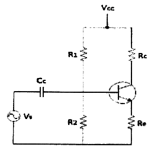
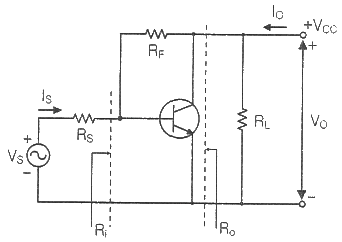
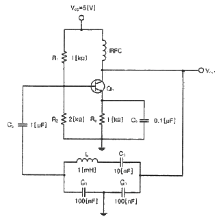
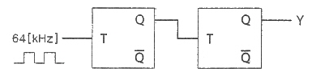
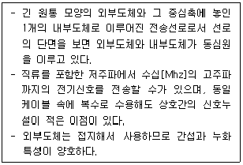
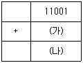

통신선로산업기사 (2019-03-09 기출문제)
1과목: 디지털전자회로
1. 전파 정류회로의 맥동률은 얼마인가?
- 약 0.482[%]
- 약 1.2[%]
- 약 11.1[%]
- 약 48.2[%]
(정답률: 74%)

2. 다음 중 직류 전원회로의 구성 순서로 옳은 것은?
- 정류회로 → 변압회로 → 평활회로 → 정전압회로
- 변압회로 → 정류회로 → 평활회로 → 정전압회로
- 변압회로 → 평활회로 → 정류회로 → 정전압회로
- 변압회로 → 정류회로 → 정전압회로 → 평활회로
(정답률: 89%)
3. 다음 중 정전압회로의 파라미터에 속하지 않는 것은?
- 전압안정계수(SV)
- 온도안정계수(ST)
- 출력저항(RO)
- 최대제너전류(IZ)
(정답률: 78%)
4. 다음 중 2단 이상의 증폭기에서 잡음을 줄일 수 있는 가장 효과적인 방법은?
- 종단 증폭기의 이득은 첫단 증폭기에 비해 가능한 낮게 설계한다.
- 첫단 증폭기는 가능한 이득이 작은 증폭기로 구성한다.
- 첫단 증폭기를 트랜지스터(쌍극성 트랜지스터) 증폭기로 구성한다.
- 첫단 증폭기를 잡음지수(Noise Figure)가 낮은 증폭기로 구성한다.
(정답률: 87%)
5. 다음 회로에서 Re의 값과 관계가 없는 것은?

- Re가 크면 클수록 입력 임피던스는 커진다.
- Re가 크면 안정계수 S는 적어진다.
- Re가 크면 클수록 증폭된 컬렉터 전류는 적어진다.
- Re가 크면 클수록 전압 증폭도는 커진다.
(정답률: 57%)
6. 다음 중 궤환증폭기의 특성에 관한 설명으로 틀린 것은?

- 궤환으로 입력 임피던스 Ri는 감소한다.
- 궤환으로 출력 임피던스 Ro는 감소한다.
- 궤환으로 전류이득 Io/Is는 감소한다.
- RF가 작을수록 출력전압 VO는 커진다.
(정답률: 88%)
7. 전압궤환증폭기에서 무궤환 시 이득이 A, 궤환율이 β일 때 궤환 시 전압이득은 Af = A/(1-βA)이다. βA=1 인 경우 어떠한 회로로 동작한 것인가?
- 부궤환회로이다.
- 파형정형회로이다.
- 발진회로이다.
- 궤환회로도 아니고 발진회로도 아니다.
(정답률: 69%)
8. 수정 발진회로에서 수정 진동자의 전기적 직렬 공진 주파수를 fS, 병렬 공진 주파수를 fP라 할 때, 가장 안정된 발진을 하기 위한 조건은? (단, fa는 발진 주파수이다.)
- fP ＜ fa ＜ fS
- fa = fS
- fS ＜ fa ＜ fP
- fa = fP
(정답률: 83%)
9. 다음 중 클랩(Clapp)발진기의 설명으로 틀린 것은?
- 콜피츠 발진기를 변형한 것이다.
- 발진주파수가 안정하다.
- 발진주파수 범위가 작다.
- 발진출력이 크다.
(정답률: 53%)
10. 다음의 회로에서 발진기 명칭과 C3의 역할이 맞는 것은?

- 클랩 발진기, 발진 주파수 안정화
- 컬렉터 동조형 발진기, 발진 이득의 안정화
- 콜피츠 발진기, 위상 안정화
- 하틀린 발진기, 왜율 개선
(정답률: 82%)
11. 진폭변조 회로에서 피변조파 전력이 30[kW]이고 변조도가 100[%]라면 반송파 전력은 얼마인가?
- 10[kW]
- 20[kW]
- 30[kW]
- 40[kW]
(정답률: 36%)
12. 다음 중 DSB-LC(DSB-TC) 변조 후에 발생되는 (피)변조 신호를 구성하는 성분이 아닌 것은?
- 반송파
- USB
- LSB
- FSB
(정답률: 82%)
13. 다음 중 간접 FM 변조회로에서 변조용으로 사용되는 다이오드는?
- 가변용량 다이오드
- 터널 다이오드
- 제너 다이오드
- 쇼트키 다이오드
(정답률: 48%)
14. 진폭변조(AM)에서 반송파 주파수(fc)가 1,000[Hz]이고, 신호파 주파수(fs)가 2[kHz]일 때 필요한 주파수대역폭(BW)은?
- 1[kHz]
- 4[kHz]
- 1,000[kHz]
- 4,000[kHz]
(정답률: 83%)
15. 다음 중 멀티바이브레이터의 단안정회로와 쌍안정회로는 어떻게 결정되는가?
- 결합회로의 구성에 따라 결정된다.
- 출력전압의 부궤환율에 따라 결정된다.
- 입력전류의 크기에 따라 결정된다.
- 바이어스 전압 크기에 따라 결정된다.
(정답률: 75%)
16. 다음 중 클리핑 레벨의 위 레벨과 아래 레벨 사이의 간겨을 좁게하여 입력파형의 특정 부분을 잘라내는 회로는?
- 클램핑 회로(Clamping Circuit)
- 슬라이서 회로(Slicer Circuit)
- 적분 회로(Integral Circuit)
- 클리핑 회로(Clipping Circuit)
(정답률: 82%)
17. 다음 중 이진수 101011을 십진수로 표시한 것은?
- 37
- 41
- 43
- 45
(정답률: 89%)
18. 다음 회로에서 Y는 어떤 파형이 출력되는가? (단, 입력은 64[kHz] 구형파이다.)

- 32[kHz] 구형파
- 24[kHz] 구형파
- 16[kHz] 구형파
- 8[kHz] 구형파
(정답률: 73%)
19. 다음 중 동기식 카운터와 가장 관계가 없는 것은?
- 리플 카운터라고도 한다.
- 동일 클록으로 동작한다.
- 고속 카운팅에 적합하다.
- 회로 설계시 주의를 요한다.
(정답률: 77%)
20. 다음 중 마스터-슬레이브 플립플롭으로 해결할 수 있는 현상으로 알맞은 것은?
- Toggle 현상
- Race 현상
- Storage 현상
- Hogging 현상
(정답률: 70%)
2과목: 유선통신기기
21. 전화기의 다이얼 펄스(DP)에서 메이크 접속 시간이 33[ms]이고, 브레이크 접속시간 시간이 68[ms]이다. 브레이크 율은 약 얼마인가?
- 33.3[%]
- 66.6[%]
- 67.3[%]
- 100[%]
(정답률: 87%)
22. 국내 전화망의 전화기 다이얼에서 사용되는 다이얼 펄스신호의 규격은 브레이크 시간이 67[ms], 메이크 시간이 33[ms]이다. 이 때 단위시간당 송출되는 임펄스 개수를 나타내는 임펄스 속도는 얼마인가?
- 10[PPS]
- 33[PPS]
- 67[PPS]
- 100[0]
(정답률: 83%)
23. 다음은 데이터 단말장치(DTE)를 통한 통신기기들과의 접속을 위한 규정을 제정하는 관련 기관들이다. 다음 중 가장 관련이 적은 기관은?
- 국제표준화기구(ISO)
- 국제전기통신연합 표준화부문(ITU-T)
- 국제전기표준회의(IEC)
- 국제해사기구(IMO)
(정답률: 89%)
24. 다음 중 CATV(케이블 TV)에 대한 설명으로 옳지 않은 것은?
- 헤드엔드, 중계 전송망, 가입자 설비 등으로 구성되어 있다.
- 신호는 단방향으로만 전송된다.
- 전송 시스템은 주파수 분할 다중 방식(FDM)을 사용한다.
- 서비스 분배 전송로는 트리형, 리형, 버스형 등을 사용한다.
(정답률: 85%)
25. 최번 시 1시간 동안 발생한 호 수가 300, 호 평균 보류 시간이 2분일 때, 통화량을 [Erl]로 표시하면?
- 2
- 10
- 120
- 300
(정답률: 75%)
26. 전자교환기 구성요소 중 리드릴레이 혹은 반도체 스위치 등으로 구성되어 있는 것은?
- 통화로장치(Switching Network)
- 중앙제어장치(Central Controller)
- 프로그램 기억장치(Program Store)
- 호처리 기억장치(Call Store)
(정답률: 67%)
27. 교환기 가입자회로의 BORSCHT 기능 중 H(Hybrid)의 기능은?
- 통화전류 공급
- 호출신호 송출
- 가입자선 상태 감시
- 2선/4선 변환
(정답률: 84%)
28. 10개의 국이 존재하는 경우 망형(Mesh) 망의 회선 수는?
- 10
- 30
- 45
- 60
(정답률: 84%)
29. 주파수 분할 다중 방식(FDM)에 대한 설명으로 옳지 않은 것은?
- 주파수 대역을 분할하는 방식이다.
- 다수의 반송파를 사용한다.
- 직렬 전송 방식이다.
- AM 방송에 사용하는 방식이다.
(정답률: 67%)
30. PCM(펄스부호변조) 방식의 송신측 과정에 해당하는 것은?
- 표본화-양자화-압축-부호화-전송
- 표본화-압축-양자화-부호화-전송
- 표본화-부호화-압축-전송
- 표본화-양자화-부호화-압축-전송
(정답률: 91%)
31. 광섬유 케이블의 광파 손실([dBl])에 대한 설명으로 옳은 것은?
- 입력 레이저 광선의 전력의 로그에 비례한다.
- 출력 레이저 광선의 전력의 로그에 비례한다.
- 입력과 출력 레이저 광선 전력의 합에 비례한다.
- 입력과 출력 레이저 광선 전력의 곱에 비례한다.
(정답률: 67%)
32. 다음 와전류에 대한 설명 중 틀린 것은?
- 와전류는 직류에서 발생한다.
- 맴돌이 전류라고 하며 도체내부에서 소용돌이 형태로 나타나서 전류의 흐름을 방해한다.
- 사용 주파수가 높아지면 와전류 커진다.
- 전송로간의 간격을 좁히면 와전류가 커진다.
(정답률: 71%)
33. 전송로가 디지털 회선이고 전송할 정보도 디지털인 경우 원격지로 디지털 전송을 위해 필요한 장비는?
- MODEM
- DSU
- CODEC
- MODULATOR
(정답률: 85%)
34. LAN에서 Inter Networking 장비에 속하지 않는 것은?
- 라우터
- 리피터
- 브리지
- 플임 릴레이 스위치
(정답률: 89%)
35. OTDR 측정시 광전력을 입사하고 종단점까지 전송된 광신호는 2[ms]후에 수광되었다. 이 때 입사점에서 종단점까지의 거리는 약 얼마인가? (단, 광섬유 코어의 굴절률은 1.4임)
- 111[km]
- 122[km]
- 191[km]
- 214[km]
(정답률: 69%)
36. 전송량의 단위 가운데 전송량의 이득, 감쇄를 입력과 출력에 대한 자연 대수로 표현한 단위는?
- [dB]
- [Nep]
- [dBm]
- [dBW]
(정답률: 75%)
37. 케이블 접속시 두 개의 케이블의 임피던스가 정합되었을 때 반사계수는 얼마인가?
- -1
- 0
- 0.5
- 1
(정답률: 48%)
38. 선로의 감쇠량이 20[dB]인 선로에 100[mA]의 전류를 입력한 경우, 이 선로의 출력단 전류는 얼마인가?
- 1[mA]
- 5[mA]
- 10[mA]
- 50[mA]
(정답률: 82%)
39. 광섬유에서 코어의 굴절률(n1)이 1.43이고, 클래드 굴절률이 1[%] 작을 때 클래드 굴절률(n2)은 약 얼마인가?
- 1.42
- 2.42
- 3.42
- 4.42
(정답률: 71%)
40. 다음 전송매체 중 UTP 케이블은 무엇인가?
- 100BASE - FX
- 1000BASE - TX
- 1000BASE - LX
- 1000BASE – SX
(정답률: 89%)
3과목: 전송선로개론
41. 특정한 시외 전화 회선의 개방 임피던스가 30[Ω]이고 단락 임피던스가 120[Ω]이라고 할 때 이 회선의 특성 임피던스는?
- 30[Ω]
- 40[Ω]
- 50[Ω]
- 60[Ω]
(정답률: 74%)
42. 서로 다른 프로토콜을 사용하는 네트워크를 연결하기 위해서는 프로토콜의 변환 과정을 거쳐야 하는데, Application Layer에 위치하고 있는 이 장비는 프로토콜 번역기라고도 불리며 서로 다른 통신 프로토콜을 연결하는데 이용된다. 이 장비는 무엇인가?
- 라우터(Router)
- 방화벽(Firewall)
- 게이트웨이(Gateway)
- 브리지(Bridge)
(정답률: 84%)
43. 전송선로의 전기적 1차 정수를 R, L, C, G라고 할 때 무왜전송 조건은?
- RL = CG
- RC = LG
- RG = LC
- RLC = G
(정답률: 89%)
44. 다음 중 ASCII 코드에 대한 설명으로 틀린 것은?
- 정보교환을 위한 미국 표준 코드(american Standard Code for Information Interchange)이다.
- 7[bit]로 구성되어 128문자 표현이 가능하다.
- 영문 대·소문자 구반하지 못하고 표현 가능한 문자에 제한이 있다.
- Data 통신용 및 PC용 코드로 사용된다.
(정답률: 75%)
45. 다음 중 전송방향에 따른 전송방식의 종류가 아닌 것은?
- 단방향통신
- 반이중통신(Half-duplex)
- 전이중통신(Full-duplex)
- 직렬통신
(정답률: 89%)
46. 다음 중 프레임의 구간을 알리는 처음과 끝에 플래그(01111110)를 부가하여 식별하는 비트 기반 동기방식을 적용하는 프로토콜은?
- BSC(Binary Synchronous Communications) 프로토콜
- BASIC 프로토콜
- HDLC(High-Level Data Link Control) 프로토콜
- XMODEM 프로토콜
(정답률: 82%)
47. 미국전자산업협회(EIA)에서 UTP케이블의 품질에 따라 등급을 부여한 것으로, 품질이 낮을 것을 1등급에서 높은 것을 7등급으로 각각 표시하고 있는 등급 표준을 나타내는 용어는 무엇인가?
- Hierarchy
- Class
- Category
- Grade
(정답률: 87%)
48. 다음은 무엇에 대한 특징을 설명한 것인가?

- UTP(Unshielded Twisted Pair) 케이블
- STP(Shielded Twisted Pair) 케이블
- 동축케이블
- 광케이블
(정답률: 77%)
49. 동축 케이블의 외보도체에 일정한 간격으로 홈을 만들어 미약한 전파를 발생시키도록 한 케이블로 터널 내에 설치하여 열차 이동무선전화의 안테나로 이용되는 케이블은?
- UTP케이블(Unshielded Twisted Pair Cable)
- 알페스 케이블(Alpeth Cable)
- 누설동축케이블(Leakage Coaxial Cable)
- 폼스킨케이블(Form Skin Cable)
(정답률: 78%)
50. 다음 중 광전송의 단일모드(Single Mode)와 다중모드(Multi Mode)를 서로 비교 설명한 것으로 틀린 것은?
- 단일모드는 장거리 전송에 적합하다.
- 다중모드는 근거리용으로 사용된다.
- 단일모드는 코어의 지름이 작다.
- 다중모드는 빛의 산란이 적다.
(정답률: 77%)
51. 광케이블의 주요 파라미터에 대한 설명 중 틀린 것은?
- 비굴절률차 : 코어와 코어간의 상대적 굴절률차
- 수광각 : 광을 코어 내에서 전도하기 위한 최대 입사각도
- 개구수 : 입사광에 대해 받아들일 수 있는 최대 수광각
- 광의 선폭 : 빛에너지의 최대 전력의 1/2인 두 점 사이의 파장 폭
(정답률: 75%)
52. 광섬유에서 재료분산과 도파로 분산이 서로 상쇄되어 파장 분산값이 '0'이 되는 영분산 파장대는 어느 파장인가?
- 860[nm]
- 980[nm]
- 1,310[nm]
- 1,400[nm]
(정답률: 85%)
53. 광섬유의 내부에서 전반사를 일으키기 위한 굴절률 크기의 순서를 바르게 나열한 것은? (단, 코어의 굴절률 = n1, 클래드의 굴절률 = n2, 공기의 굴절률 = n0)
- n0 ＞ n1 ＞ n2
- n1 ＞ n0 ＞ n2
- n0 ＞ n2 ＞ n1
- n1 ＞ n2 ＞ n0
(정답률: 87%)
54. LED의 양단자에 2[V]를 인가할 때, 100[mA]가 흘러스 2[mW]의 광출력이 나왔다면 전기에서 광으로 바뀌는 LED의 변환 효율은 얼마인가?
- 1[%]
- 2[%]
- 3[%]
- 4[%]
(정답률: 63%)
55. 다음 중 통신선로 구성에 대한 설명으로 틀린 것은?
- 구내통신선로 구성은 인입관로, 수직덕트, 수평덕트, 구내배관, 국내케이블, 실내단자함, MDF 등이다.
- 국선 인입은 인입주로부터 인입거리가 가능한 최대거리가 되도록 설치한다.
- 인입은 맨홀을 설치하여 국선 단자함에 수용한다.
- 국선의 인입은 사업자의 전주에 인입배관을 설치하여 지하로 인입할 수 있다.
(정답률: 82%)
56. 건축물의 옥내에는 선로를 용이하게 설치하거나 철거할 수 있도록 배관시설을 설치 하여야 한다. 배관 굴곡의 곡률반경은 얼마인가?
- 배관내경의 3배 이상
- 배관내경의 4배 이상
- 배관내경의 5배 이상
- 배관내경의 6배 이상
(정답률: 72%)
57. 광 CATV 시설에서 전기신호를 광신호로 변환하여 전송하는 장치는?
- 인코더
- 광전송시스템
- 분배시스템
- 가입자 장치
(정답률: 83%)
58. 분기 L형1호의 맨홀에서 관로공수는 얼마인가?
- 4공 이하
- 6공 이하
- 8공 이하
- 9공 이하
(정답률: 77%)
59. 다음 중 광섬유 펄스시험기(OTDR) 측정원리가 아닌 것은?
- 레일리 산란
- 프레넬 반사
- 후방산란광
- 모드 분산
(정답률: 80%)
60. 특정한 전송 선로의 전압을 측정한 결과 입력측 전압 1[V], 출력측 전압 0.1[V]이 각각 측정되엇다. 이 선로의 감쇠량은 얼마인가?
- 10[dB]
- 20[dB]
- 40[dB]
- 60[dB]
(정답률: 47%)
4과목: 전자계산기일반 및 선로설비기준
61. 다음 중 RAM에 관한 설명으로 틀린 것은?
- RAM은 반도체 기억 소자를 물리적으로 배열함으로써 이루어진 8×8 크기를 갖는 구조를 나타내고 있다.
- MBR은 기억 장치의 주소선에 연결되어 있으며, 특정한 기억공간을 지정하기 위한 주소들을 기억한다.
- 한 개의 RAM에 집적할 수 있는 기억 용량에는 한계가 있으므로, 보통 여러 개의 RAM을 이용하여 원하는 용량의 기억장치를 구성한다.
- RAM의 동작은 기억 장치를 중심으로 MAR(Memory Address Register), MBR(Memory Buffer Register) 그리고 RAM의 동작을 제어하기 위한 선택 신호(CS), 읽기/쓰기(R/W) 신호들에 의해 이루어진다.
(정답률: 74%)
62. 2진수 11001-10001을 2의 보수를 이용하여 연산할 경우 (가)와 (나)의 표현으로 옳은 것은?

- 01110, 00111
- 01111, 01000
- 01110, 01000
- 10000, 01001
(정답률: 45%)
63. 논리 연산 동작을 수행한 후 결과를 축적하는 레지스터는?
- 어큐뮬레이터(Accumulator)
- 인덱스 레지스터(Index register)
- 플래그 레지스터(Flag register)
- 시프트 레지스터(Shift register)
(정답률: 75%)
64. 다음 중 2진수 10011을 0100으로 각 비트의 값을 반전시키거나 보수를 구할 때 사용하는 연산은?
- AND 연산
- OR 연산
- NOT 연산
- XOR 연산
(정답률: 67%)
65. 다음 중 운영체제의 역할이 아닌 것은?
- 사용자와의 인터페이스 정의
- 사용자 간의 데이터 공유
- 사용자 간의 자원 스케줄링
- 파일 구조 설계
(정답률: 88%)
66. 다음 중 스택(Stack)에 대한 설명으로 옳은 것은?
- 1-주소(번지) 명령어 형식에 주로 사용된다.
- 복귀번지를 저장할 때 유용하게 사용된다.
- FIFO(First In First Out) 구조를 갖는다.
- 팝(POP)은 스택에 새로운 자료를 추가하는 인선이다.
(정답률: 56%)
67. 다음 중 운영체제의 기능에서 프로세서 관리에 대한 설명으로 틀린 것은?
- 프로세서 실행 중이란 반드시 중앙처리장치에서 실행(Running)되고 있음을 의미한다.
- 프로세서란 컴퓨터 시스템에 입력되어 운영체제의 관리하에 들어갔으며, 아직 수행이 종료되지 않은 상태를 의미한다.
- 각 프로세서들에 대해 지금까지의 총 실행시간이 얼마인지 등에 대한 정보를 기억하고 있어야 한다.
- 프로세서들을 관리하는 과정에서 자원을 동시에 사용하고자 할 경우 이를 중재하여 데이터의 무결성(Integrity)을 잃지 않도록 한다.
(정답률: 69%)
68. 다음 중 병렬처리 시스템의 설명으로 틀린 것은?
- 병렬처리는 다수의 프로세서들이 여러 개의 프로그램들 또는 한 프로그램의 분할된 부분들을 분담하여 동시에 처리하는 기술이다.
- 컴퓨터 시스템의 계산속도 향상이 목적이다.
- 시스템의 비용 증가가 없고 별도로 하드웨어가 필요하지 않는다.
- 분할된 부분들을 병렬로 처리한 결과가 전체 프로그램을 순차적으로 처리한 경우와 동일한 결과를 얻을 수 있다.
(정답률: 83%)
69. 소프트웨어 프로세스 품질보증에서 CMM의 성숙 단계로 맞는 것은?
- 초보단계-정의단계-반복단계-관리단계-최적화단계
- 초보단계-반복단계-관리단계-정의단계-최적화단계
- 초보단계-반복단계-최적화단계-관리단계-정의단계
- 초보단계-반복단계-정의단계-관리단계-최적화단계
(정답률: 50%)
70. 입출력 주소지정방식에 있어 메모리 주소와 입출력 주소가 단일 주소 공간으로 구성되어 주소관리는 용이하나, 메모리 주소공간이 입출력 주소공간에 의해 축소되는 단점을 갖는 주소지정방식은 무엇인가?
- Programmed I/O
- Interrupt I/O
- Memory-Mapped I/O
- I/O-Mapped I/O
(정답률: 83%)
71. 정보통신공사업자 외의 자가 시공할 수 있는 경미한 공사의 범위에 해당되지 않은 것은?
- 연면적 2천 제곱미터 이하 건축물의 자가유선방송설비공사
- 건축물에 설치되는 5회선 이하의 구내통신선로 설비공사
- 허브의 증설이 없는 5회선 이하의 LAN 증설공사
- 간이무선국의 설치공사
(정답률: 83%)
72. 다음 중 요금을 감면 받을 수 없는 전기통신서비스는 무엇인가?
- 인명, 재산의 위험 및 재해의 구조에 관한 통신
- 우정사업 경영상 특히 필요로 하는 통신
- 신문과 방송국의 보도용 통신
- 중앙행정기관의 일상 공무용 통신
(정답률: 78%)
73. 다음의 기술계 정보통신기술자의 등급 및 인정범위 중에서 고급기술자에 해당하지 않는 것은?
- 기사자격을 취득한 후 5년 이상 공사업무를 수행한자
- 산업기사자격을 취득한 후 8년 이상 공사업무를 수행한자
- 기능사자격을 취득한 후 13년 이상 공사업무를 수행한자
- 고등학교를 졸업한 후 20년 이상 공사업무를 수행한자
(정답률: 90%)
74. 정보통신공사협회는 누구의 인가를 받아 설립할 수 있는가?
- 과학기술정보통신부장관
- 방송통신위원장
- 고용노동부장관
- 기획재정부장관
(정답률: 77%)
75. 전기통신의 전송이 이루어지는 유형 또는 무형의 계통적 전기통신로는 무엇인가?
- 전송망
- 회선
- 강전류케이블
- 강절연케이블
(정답률: 82%)
76. 다음 중 정보통신설비공사의 감리용역 계약문서가 아닌 것은?
- 계약서
- 공사계약 일반조건
- 기술용역입찰유의서
- 감리과업 지시서
(정답률: 59%)
77. 다른 사람에게 자기의 성명을 사용하여 감리업무를 수행하게 하는 자에게 처해지는 벌칙은?
- 3년 이하의 징역 또는 2천만원 이하의 벌금
- 3년 이하의 징역 또는 1천만원 이하의 벌금
- 1년 이하의 징역 또는 2천만원 이하의 벌금
- 1년 이하의 징역 또는 1천만원 이하의 벌금
(정답률: 67%)
78. 공사를 설계한 용역업자는 실시설계도서를 해당 공사가 준공된 후 몇 년간 보관하여야 하는가?
- 2년
- 3년
- 5년
- 10년
(정답률: 94%)
79. 방송공동수신설비의 공사를 완료한 발주자가 동 설비를 사용하려면 누구에게 사용전검사를 받아야 하는가?
- 특별자치시장·특별자치도지사·시장·군수·구청장
- 정보통신공사협회장
- 과학기술정보통신부장관
- 방송통신위원장
(정답률: 88%)
80. 다음 중 정보통신공사업법에서 규정하는 사항이 아닌 것은?
- 정보통신공사의 조사·설계에 관한 사항
- 정보통신공사의 시공·감리에 관한 사항
- 정보통신공사의 자재구매에 관한 사항
- 정보통신공사의 등록 및 도급에 관한 사항
(정답률: 95%)
전파 정류회로는 다이오드를 사용하여 전류를 일정한 방향으로만 흐르게 만들어주는 회로입니다. 이 때, 다이오드의 특성상 전류가 흐르는 시간과 그렇지 않은 시간이 번갈아가며 발생하게 됩니다.
따라서 전파 정류회로의 맥동률은 다이오드가 전류를 흐르게 만드는 시간 대비 전체 주기 중 전류가 흐르는 시간의 비율로 계산됩니다. 이 값은 대략 48.2% 정도가 됩니다.